Representation Learning
-
Momentum contrast for unsupervised visual representation learning
BibTex
url= https://openaccess.thecvf.com/content_CVPR_2020/papers/He_Momentum_Contrast_for_Unsupervised_Visual_Representation_Learning_CVPR_2020_paper.pdf
@inproceedings{he2020moco,
title={Momentum contrast for unsupervised visual representation learning},
author={He, Kaiming and Fan, Haoqi and Wu, Yuxin and Xie, Saining and Girshick, Ross},
booktitle={Proceedings of the IEEE/CVF conference on computer vision and pattern recognition},
year={2020}}
Summary
This paper is tackling the problem of representation learning with contrastive loss where an encoded query is matched to dictionary of encoded keys. Contrastive methods are sensitive to the number of negative examples, usually limited by the batch. Compared to previous methods such as end-to-end training of 2 encoders or using a memory bank, this paper proposes a new method called Momentum Contrast (MoCo) that uses a queue to store multiples batches of encoded keys in Fifo style and a momentum update for the key encoder to ensure all encoded keys in the queue belong to the same representation space. The queue overcome the limitated on the end to end technique which was limited by the overall hardware memory available for the batch and the momementum update ensure that the keys are in the same representation space unlike the keys in the memory bank. From training, only the query encoder is updated by backpropagation. The key encoder is conservatively updated by momementum update where at most 10% of the key encoder is updated by the query encoder. They notice Batch normalization is not effective in this case because it leaks information via intra-batch communication across samples. To fix that, they introduce Shuffling Batch Normalization where they use multiple GPUs, performing batch normalization on independly for each GPU and then shuffling the samples across GPUs.
Problem representation learning by expand negative pairs
Solution, Ideas and Why Fifo queue of multiple batches of previously encoded keys. the queue is larger than any single batch. Momentum update for the key encoder to ensure all encoded keys in the queue belong to the same representation space.
Images
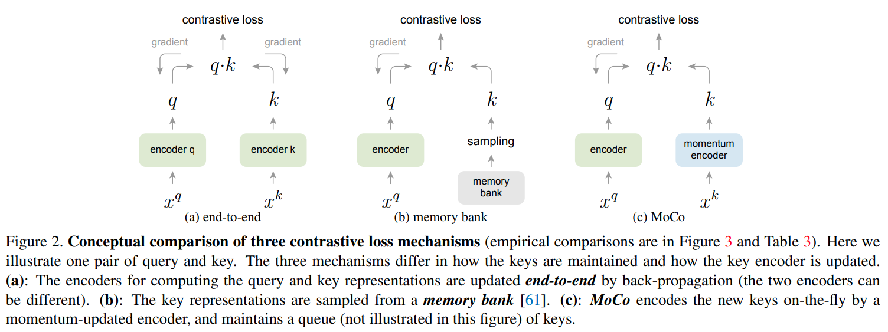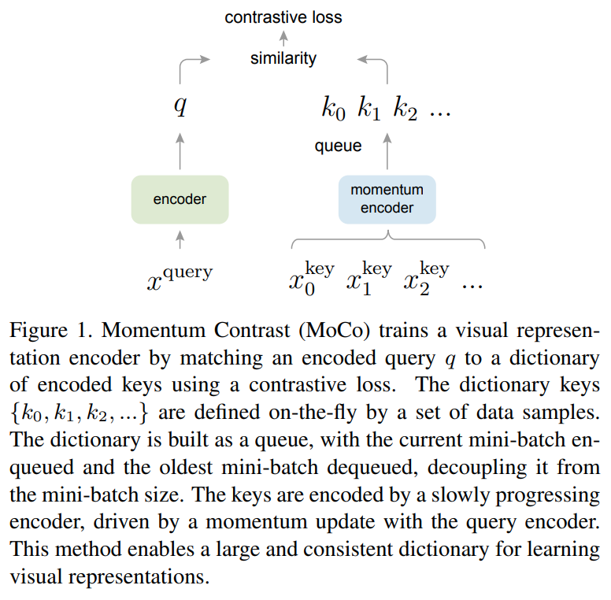 -
A simple framework for contrastive learning of visual representations
BibTex
url= http://proceedings.mlr.press/v119/chen20j/chen20j.pdf
@inproceedings{chen2020simclr,
title={A simple framework for contrastive learning of visual representations},
author={Chen, Ting and Kornblith, Simon and Norouzi, Mohammad and Hinton, Geoffrey},
booktitle={International conference on machine learning},
year={2020}}
Summary
This paper tackles the problem of representation learning with contrastive loss. The paper proposes a simple framework called SimCLR that uses a non-linear projection head on top of the encoder to get an embedding that is contrasted with other embedding of the same sample. Given a sample, they apply a random composition of augmentations like crop, color etc to get a positive pair of augmented view from the same sample and contrast it with negative pairs of view from different samples in the batch. As such, the perform the best, the number of negative examples needs to be large, making the batch size large. They explored different combinations of augmentations and found that the best combination is a composition of random crop, color distortion, sobel filtering and gaussian blur. The introduced projection head as simple mlp before the contrastive loss to put distance between features and output so less information is lost in features. Overall, they found that introducing a simclr stage before finetuning the model on the downstream task improves the performance of the model.
Problem representation learning by expand negative pairs through data augmentation
Solution, Ideas and Why
Images
Composition of augmentations like crop, color etc to get a positive pair of augmented view from the same sample. Contrast with negative pairs of view from different samples Add a projector (mlp) on top of the repr. encoder to get embeddings that will be contrasted. Puts distance between features and output so less information is lost in features. pretrain -> simclr -> finetuning
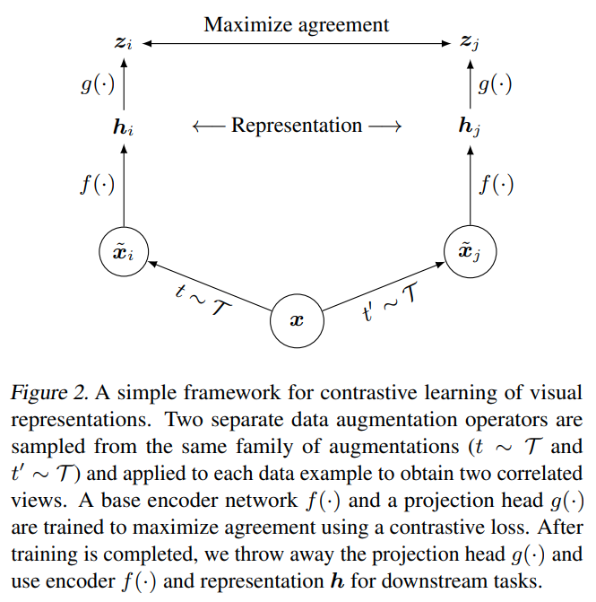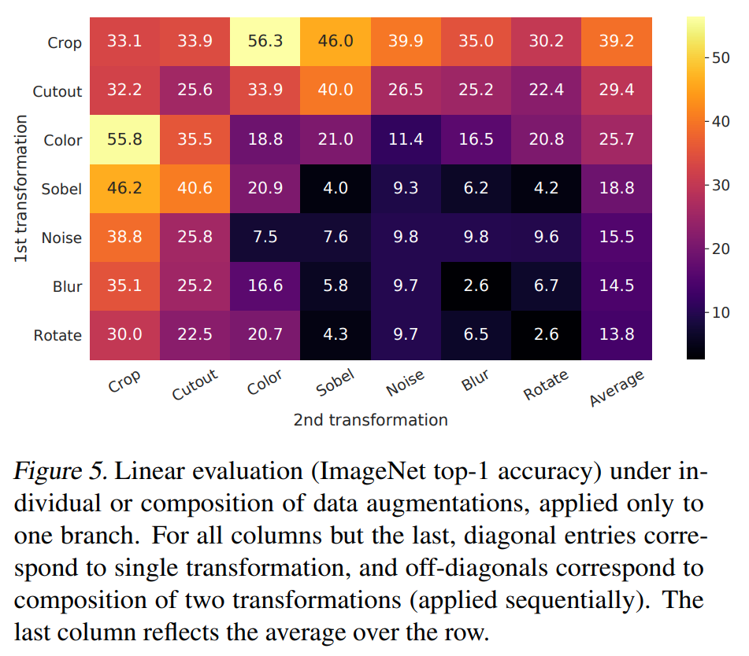 -
Bootstrap your own latent-a new approach to self-supervised learning
BibTex
url= https://proceedings.neurips.cc/paper_files/paper/2020/file/f3ada80d5c4ee70142b17b8192b2958e-Paper.pdf
@article{grill2020byol,
title={Bootstrap your own latent-a new approach to self-supervised learning},
author={Grill, Jean-Bastien and Strub, Florian and Altch{\'e}, Florent and Tallec, Corentin and Richemond, Pierre and Buchatskaya, Elena and Doersch, Carl and Avila Pires, Bernardo and Guo, Zhaohan and Gheshlaghi Azar, Mohammad and others},
journal={Advances in neural information processing systems},
year={2020}}
Summary
This paper tackles the problem of representation learning but with no negative pairs. The paper proposes a framework called Bootstrap Your Own Latent (BYOL) that uses 2 branches a momentum encoder, a projector head, a predictor head, and no negative pairs. BYOL works by 2 augmented views of the same sample, and passing to the 2 branches. The first branch has an online encoder updated by backpropagation that produces a representation of the augmented view. That representation is passed to the projector head which is a mlp that outputs a projection of the representation. Finally the projection is passed to the predictor head which is a mlp that outputs a prediction of the projection of the other branch. The other branch has a target encoder updated by momentum update that produces a representation of the other augmented view. The representation is passed to the projector head to get a projection of the representation. That second projection is the projection that the predictor head is trying to predict. The momentum update is a at most 10% update of the online encoder. BYOL uses symmetric loss, meaning that the augmented views are passed to both branches in the first order then the reverse order. This approach is at risk of collapsing to a constant function where all inputs are mapped to the same representation. To avoid that, they use the momentum update on the target encoder branch.
Problem representation learning with no negative pairs
Solution, Ideas and Why positive pair into 2 branches, one with encoder, projector, and a predictor learning to predict the projection of the other branch, encouraging same representation for positive pair. momentum update on the target network branch (no predictor) to avoid collapse of the network to a constant function give same representation for all inputs.
Images
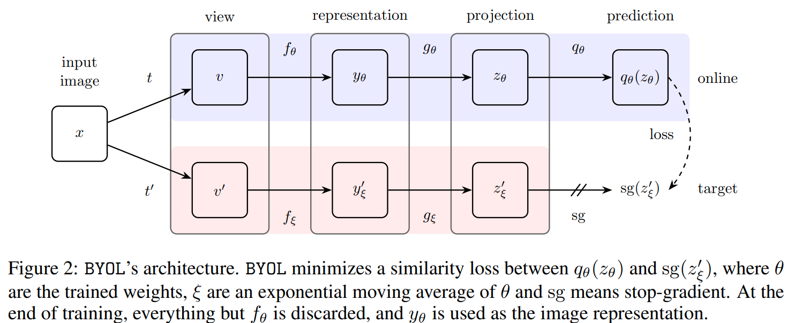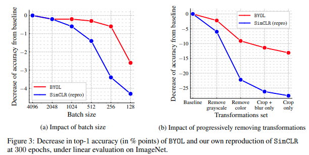 -
Self-supervised relational reasoning for representation learning
BibTex
url= https://proceedings.neurips.cc/paper_files/paper/2020/file/29539ed932d32f1c56324cded92c07c2-Paper.pdf
@article{patacchiola2020relational,
title={Self-supervised relational reasoning for representation learning},
author={Patacchiola, Massimiliano and Storkey, Amos J},
journal={Advances in Neural Information Processing Systems},
year={2020}}
Summary
This paper tackles the problem of representation learning but with relational reasoning module and cross entropy loss instead of using contrastive loss. They propose a framework called Relational reasoning that uses a relational network to ingest concatenated positive pair from augmented view of the same sample and negative pair from augmented views of different samples. The relational network outputs relation probablity of a pair being related to the same sample. The relational network is trained with binary cross entropy loss. They explored different aggregation methods for the relational network and found that concatenation is the best.
Problem representation learning with 1 positive pair and 1 negative pair
Solution, Ideas and Why relational network ingest concatenated positive pair and negative pair. outputs relation probablity (1 for related, 0 otherwise). more efficient as the number of comparision scales linearly with the batch size (instead of quadratically), best aggregation is concatenation, loss is focal loss.
Images
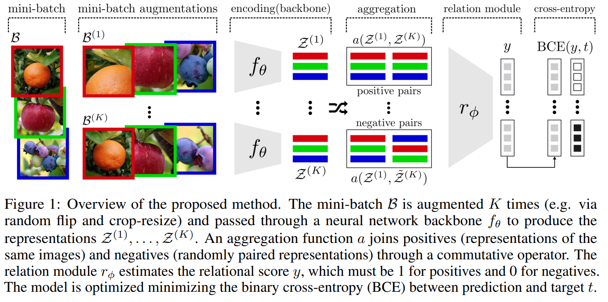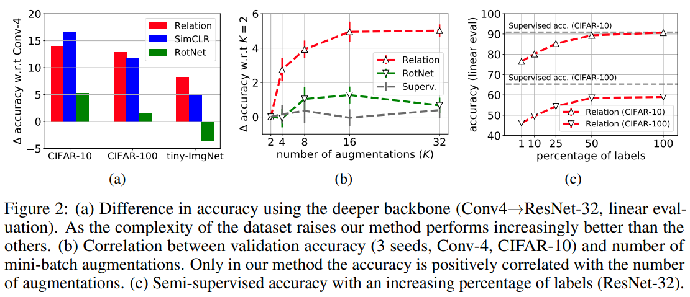 -
Unsupervised learning of visual features by contrasting cluster assignments
BibTex
url= https://proceedings.neurips.cc/paper_files/paper/2020/file/70feb62b69f16e0238f741fab228fec2-Paper.pdf
@article{caron2020swav,
title={Unsupervised learning of visual features by contrasting cluster assignments},
author={Caron, Mathilde and Misra, Ishan and Mairal, Julien and Goyal, Priya and Bojanowski, Piotr and Joulin, Armand},
journal={Advances in neural information processing systems},
year={2020}}
Summary
This paper tackles the problem of representation learning but with no negative pairs and no contrastive loss. The paper proposes a framework called SwAV that doesn't match projections but matches cluster assignments of augmented views. They start by learning cluster prototypes such that the cluster assignments of the positive pair of augmented views from the same sample are the same. Their framework consist of a 2 branch network. From a single sample, they produce 2 augmented views, pass them to the 2 branches. First the encoders of the 2 branches produce representations of the augmented views. The representations are passed into a projection head to produce projections of the representations. The projections are passed into a cluster assignment head to produce cluster assignments of the projections to the cluster prototypes. The loss function compares the cluster assignment of one branch to the projection of the other and vice -versa symmetrically. They also introduce multi-crop or using 2 standard resolution images and multiple low resolution crops to increase performance.
Problem representation learning with no negative pairs
Solution, Ideas and Why matching cluster assingments of positive pairs to learned cluster prototypes (symmetric loss). multi-crop or using 2 standard resolution images and multiple low resolution crops to increase performance.
Images
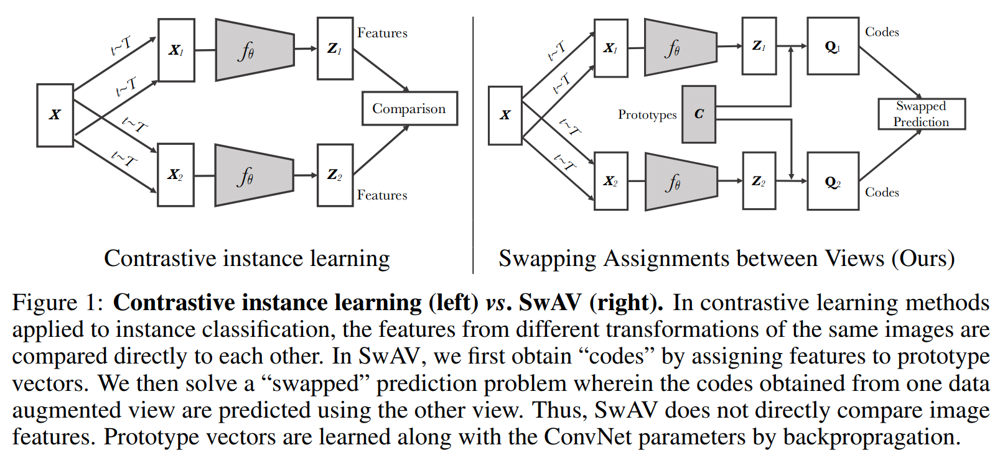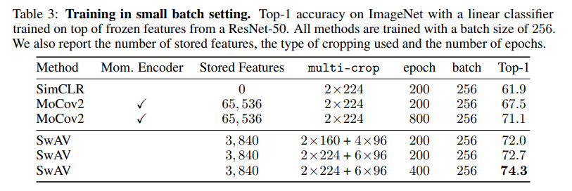 -
Vime: Extending the success of self-and semi-supervised learning to tabular domain
BibTex
url= https://proceedings.neurips.cc/paper_files/paper/2020/file/7d97667a3e056acab9aaf653807b4a03-Paper.pdf
@article{yoon2020vime,
title={Vime: Extending the success of self-and semi-supervised learning to tabular domain},
author={Yoon, Jinsung and Zhang, Yao and Jordon, James and van der Schaar, Mihaela},
journal={Advances in Neural Information Processing Systems},
year={2020}}
Summary
This paper is tackling the problem of representation learning with tabular data. The paper propose VIME or Value Imputation and masked estimation where there are a 2 stages, a self supervised stage and a semi-supervised stage. In the self supervised stage, they mask a random subset of features and then pass the corrupted sample to the encoder which then outputs a representation. The representation is then passed to a decoder which outputs a reconstruction of the original sample and another decoder which outputs the mask applied to the samples. The second stage is a semi-supervised stage where they create several corrupted views of the same sample and pass it to the encoder along with the original sample. The encoder outputs a representation for each view. The representations are passed to the predictor head to output predictions for the original samples and the corrupted views. The original sample prediction is compared to the original sample label and the corrupted views are compared with each other to make sure, coming from the same original sample, they are consistent in predictions. In total, the network has 3 branches and 4 loss functions. The reconstruction and masked estimation loss for the first stage. The Supervised and Consistency loss for second stage. The masking process is done by randomly shuffling the values of the features (columns) of the samples in the batch.
Problem representation learning on tabular data
Solution, Ideas and Why mask input samples and learn generative features to predict the original sample and the applied mask. in addition to supervised loss, use consistency loss that encourages same representation for augmeted views of same input
Images
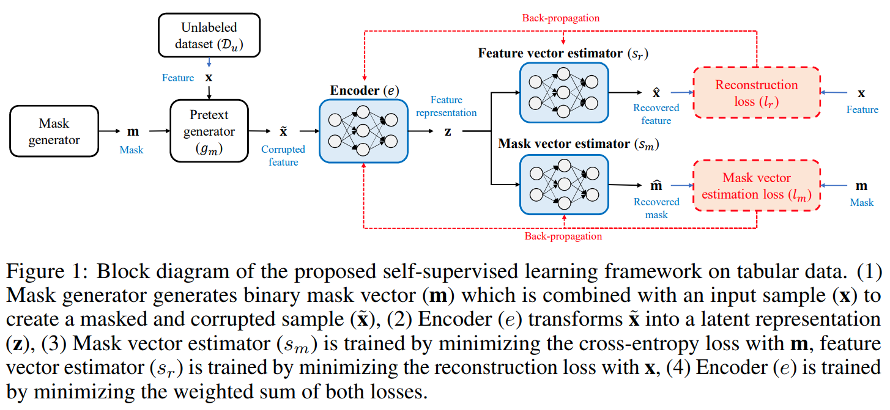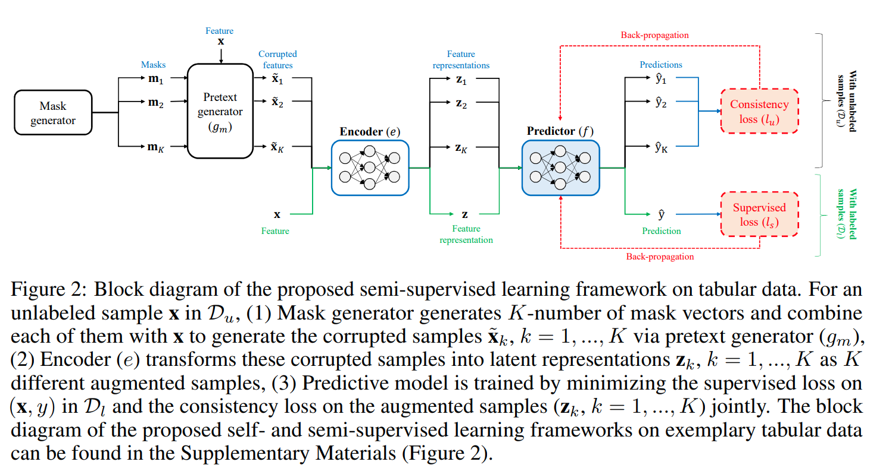 -
Exploring simple siamese representation learning
BibTex
url= https://openaccess.thecvf.com/content/CVPR2021/papers/Chen_Exploring_Simple_Siamese_Representation_Learning_CVPR_2021_paper.pdf
@inproceedings{chen2021simsiam,
title={Exploring simple siamese representation learning},
author={Chen, Xinlei and He, Kaiming},
booktitle={Proceedings of the IEEE/CVF conference on computer vision and pattern recognition},
year={2021}}
Summary
This paper tackles the problem of representation learning with siamese network and the collapse issue. The propose a simple siamese network that uses predictor branch and a non-predictor branch with stop gradient, no negative pairs, and no momentum encoders. From a single sample, they generate 2 augmented views and pass them to the 2 branches in both this order and the flip order of the views. Both branches have the same encoder, but only the predictive branch has gradient updates. the encoders output representation and on the predictive branch, the representation is passed to a predictor head to predict the representation of the second branch. The loss is a symmetric cosine simimlarity loss between the prediction of the first branch and the projection of the second branch. They show how their approach is similar to an expectation minimization algorithm and the stop-gradient is important to preventing collapse to a constant function.
Problem representation learning with siamese network simplified to avoid collapse without using negative pairs
Solution, Ideas and Why stop gradient in non-predictor branch to avoid collapse to constant function. symmetric (views are swapped) loss matching first branch prediction and second branch projection.
Images
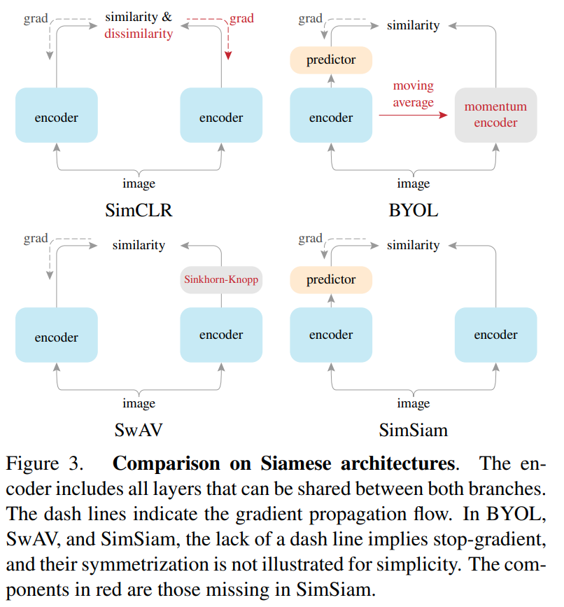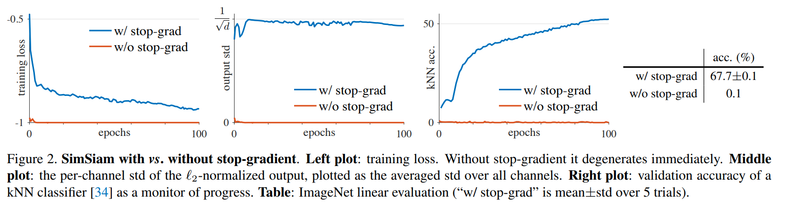 -
Barlow twins: Self-supervised learning via redundancy reduction
BibTex
url=http://proceedings.mlr.press/v139/zbontar21a/zbontar21a.pdf
@inproceedings{zbontar2021barlow,
title={Barlow twins: Self-supervised learning via redundancy reduction},
author={Zbontar, Jure and Jing, Li and Misra, Ishan and LeCun, Yann and Deny, St{\'e}phane},
booktitle={International Conference on Machine Learning},
year={2021}}
Summary
This paper tackles the issue of avoid collapse to a constant function in representation learning by measuring the cross correlation matrix. Given a batch of samples, they generate a random pair of batches of augmented views passed into a shared decoder and projectin head to produce a pair of projections of the batch of input samples. From the batches of projections, they calculate the cross correlation matrix between the 2 batches of projections. The cross correlation matrix should be an identity matrix meaning that the same feature indices should be correlated and different feature indices should be non correlated. To calculate the correlation, they assume the features are meaned at 0 over the batch dimension and divide by largest cross correlation value to avoid large feature values being interpreted as large correlation.
Problem representation learning without negative pairs and avoiding collapse
Solution, Ideas and Why cross correlation matrix loss between 2 views embeddings should be identity matrix where same features should be correlated and different features should be non correlated. the cross correlation calculations should include a normalization denominator so large feature values are not interpreted as large correlation
Images
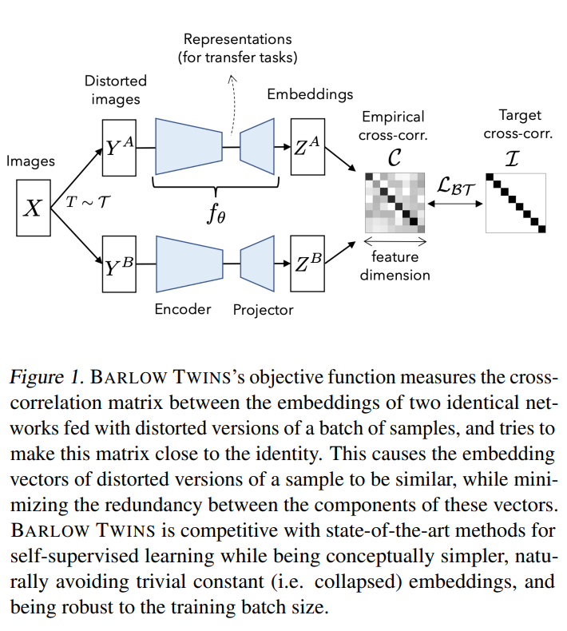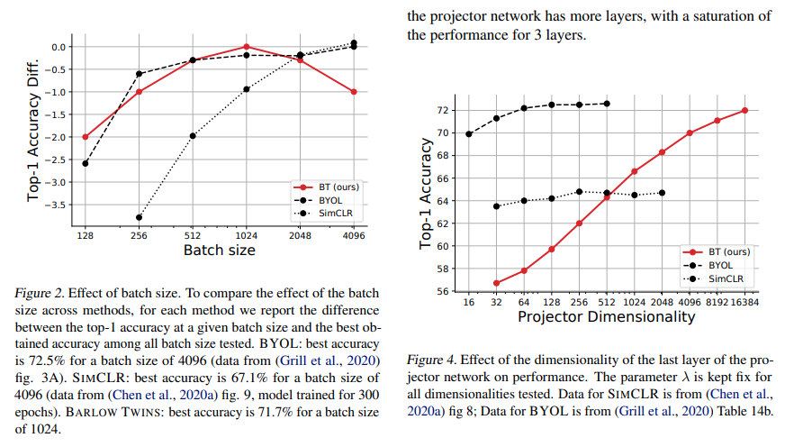 -
Whitening for self-supervised representation learning
BibTex
url=http://proceedings.mlr.press/v139/ermolov21a/ermolov21a.pdf
@inproceedings{ermolov2021whitening,
title={Whitening for self-supervised representation learning},
author={Ermolov, Aleksandr and Siarohin, Aliaksandr and Sangineto, Enver and Sebe, Nicu},
booktitle={International Conference on Machine Learning},
year={2021}}
Summary
This paper tackles the problem of representation learning with whitening. The paper propose whitening to prevent collapse. The authors first start by producing a lot more than 1 positive pair with no need for negative pairs. They do that by augmenting the input sample multiple times and passing the augmented samples to the encoder to produce multiple embeddings. They then whiten the embeddings by moving them to a zero mean 1 standard dev distribution. Normalize them so they rest in a unit circle. Then they calcualte MSE similarity between all positive pairs to attract them together. The whitening step require calculating the Wv matrix and Mu mean of the embeddings. To better estimate Wv matrix, they partition the set of embeddings according to augmentation applied. Use same random permutation of elements across partitions to obtain subbatches. They calculate Wv and mu's for subbatches. Repeat this process to obtain decent estimates of Wv and mu's.
Problem representation learning with avoiding collapse, no negative pairs, and more positive pairs
Solution, Ideas and Why produce a lot more than 1 positive pair and whiten their embeddings by moving them to a zero mean 1 standard dev distribution. Normalize them so they rest in a unit circle. calcualte MSE similarity between all positive pairs to attract them together. To better estimate Wv matrix, partition the set of embeddings accroding to augmentation applied. Use same random permutation of elements across partitions to obtain subbatches. calculate Wv and mu's for subbatches. Repeat this process to obtain decent estimates
Images
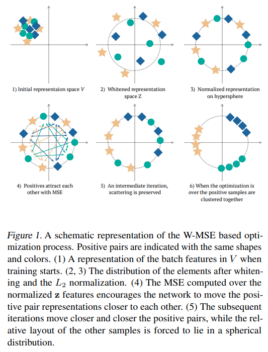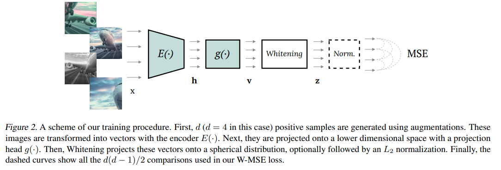 -
Subtab: Subsetting features of tabular data for self-supervised representation learning
BibTex
url= https://proceedings.neurips.cc/paper/2021/file/9c8661befae6dbcd08304dbf4dcaf0db-Paper.pdf
@article{ucar2021subtab,
title={Subtab: Subsetting features of tabular data for self-supervised representation learning},
author={Ucar, Talip and Hajiramezanali, Ehsan and Edwards, Lindsay},
journal={Advances in Neural Information Processing Systems},
year={2021}}
Summary
This paper tackles the problem of representation learning with tabular data. The paper propose SubTab or Subsetting features of tabular data for self-supervised representation learning. They divide the input instance into subsets. Subsets are used to learn representations that aggregated form the representation of the input instance. During training, the subsets are corrupted with noise. First the subsets were masked based on 3 masking schemes: 1. Random block of neighboring columns or NC 2. Random columns (RC) 3. Random features per samples (RF) The masked features were going to be replaced by noise based on 3 noising schemes: 1. adding gaussian noise 2. overwritting a value of a selected entry with another one sampled from the same column. 3. zeroing-out selected entries ONce corrupted the perturbed subsets were passed into a decoder to reconstruct the subsets or the original instane. Optionally, the paper proposed another branch with a projection head that would ingest the representation of the subsets and output a projection of the representation. Those representation would then be used to measure Distance or Similarity between subsets of the same instance and otherwise. For finetuning and inference, the subsets are not corrupted and the representation of the subsets are aggregated to form the representation of the instance.
Problem representation learning on tabular data
Solution, Ideas and Why Divide the input instance into subsets. Subsets are used to learn representations that aggregated form the representation of the input instance. During training, the subsets are corrupted with noise (gaussian, swap or zero-out) and passed into a decoder to reconstruct the subsets or the original instane.
Images
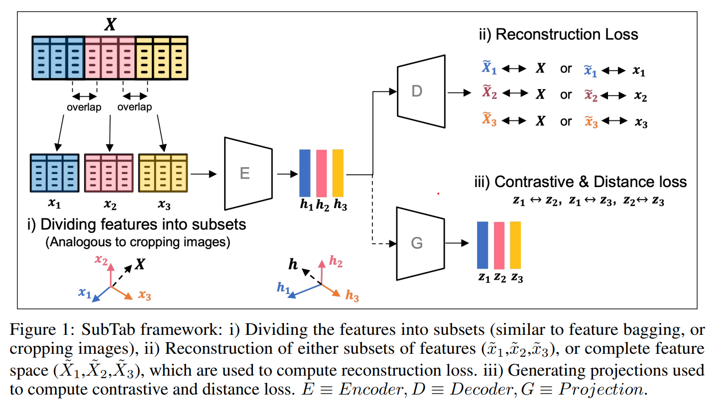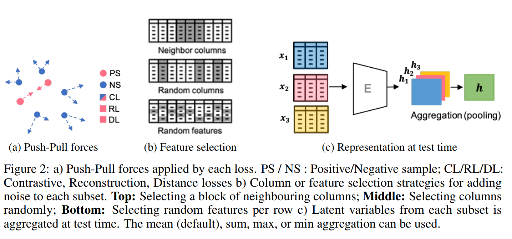 -
Scarf: Self-Supervised Contrastive Learning using Random Feature Corruption
BibTex
url= https://openreview.net/pdf?id=CuV_qYkmKb3
@inproceedings{bahri2021scarf,
title={Scarf: Self-Supervised Contrastive Learning using Random Feature Corruption},
author={Bahri, Dara and Jiang, Heinrich and Tay, Yi and Metzler, Donald},
booktitle={International Conference on Learning Representations},
year={2021}}
Summary
This paper tackles the problem of representation learning with tabular data. The paper proposes a framework called SCARF or Self-Supervised Contrastive Learning using Random Feature Corruption. There are 2 stages for this framework. The first stage is a self supervised stage where the create a corrupted view of a data instance using mask with some noise. The pass the instance and its perturbed view into an encoder and a projector to obtain final projects for the instance and its corrupted view. Then they calculate the InfoNCE to find out similarity between the instance and its corrupted view. The second stage is a supervised stage where they use the encoder from the first stage, removw the projector and add a predictor head to predict the class of the instance. They compared many noising schemes for the perturbation and found that swap noise, or replacing the values of the features with values from other instances, is the best.
Problem representation learning on tabular data
Solution, Ideas and Why generate a noisy version of the input sample, obtain the representation and projection of both the sample and the correpted to measure similarity. best noising is swap noise with feature values from other samples.
Images
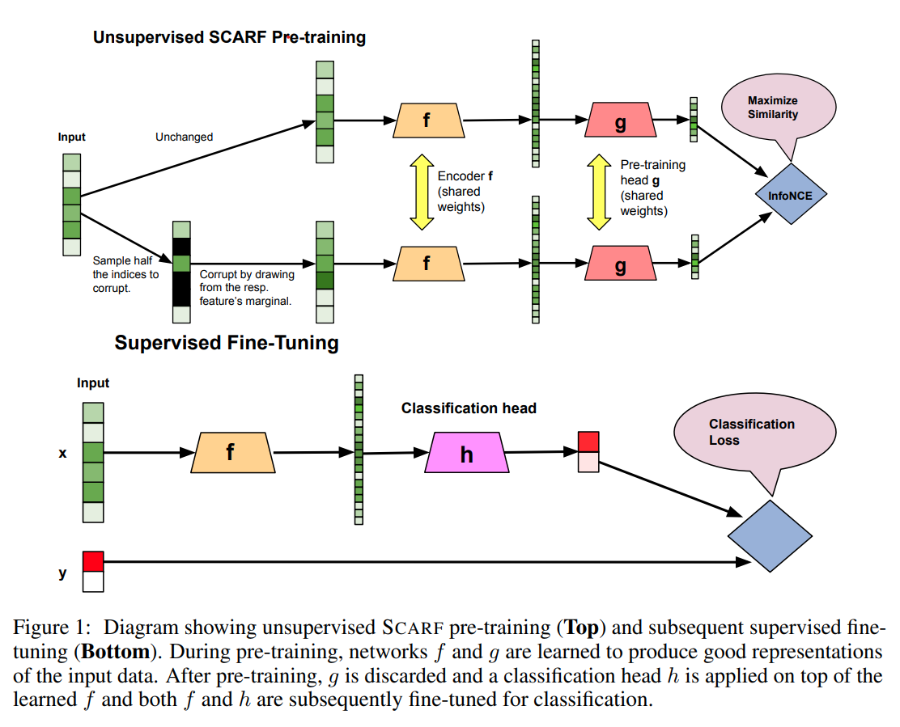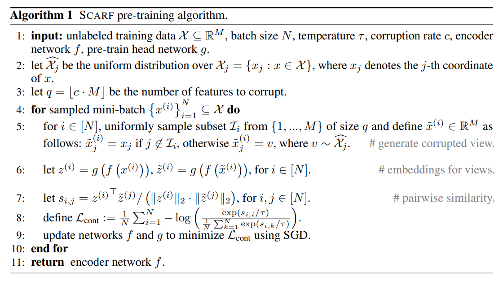 -
Semantic-aware auto-encoders for self-supervised representation learning
BibTex
url= https://openaccess.thecvf.com/content/CVPR2022/papers/Wang_Semantic-Aware_Auto-Encoders_for_Self-Supervised_Representation_Learning_CVPR_2022_paper.pdf
@inproceedings{wang2022semantic,
title={Semantic-aware auto-encoders for self-supervised representation learning},
author={Wang, Guangrun and Tang, Yansong and Lin, Liang and Torr, Philip HS},
booktitle={Proceedings of the IEEE/CVF Conference on Computer Vision and Pattern Recognition},
year={2022}}
Summary
This paper tackles the problem of semantic aware generative feature learning. The authors noticed that previous approaches to self-supervised learning for images relied on discriminative models to learn features. They proposed a framework called Semantic-aware Auto-encoders for Self-supervised Representation Learning where they use a generative model to help learn the features. The framework works by generating two augmented views of the same sample. One view is passed to the encoder to obtain a representation. The representation is passed to the decoder to obtain to try to reconstruct the other view. Unfortunately, the decoder cannot guess the other view so they add transformations on the encoder feature maps (with spatial info) to align with the transformations on 2nd view, pass the transformed features maps to decoder to obtain reconstructed image, from which they obtain the final crop. They found that the transformations on the encoder feature maps are important for the decoder to learn. They also found That spatial information in feature maps for images are crucial and that global features that are not spatially aware are not good for reconstruction.
Problem generative representation learning
Solution, Ideas and Why learn semantic aware generative features by producing 2 augmented views, passing one the views to the encoder to get repr and pass the repr to decoder to get the other view. decoder cannot guess the target view so they add transformations on the encoder feature maps (with spatial info) to align with the transformations on 2nd view, pass the transformed features maps to decoder to obtain reconstructed image, from which they obtain the final crop
Images
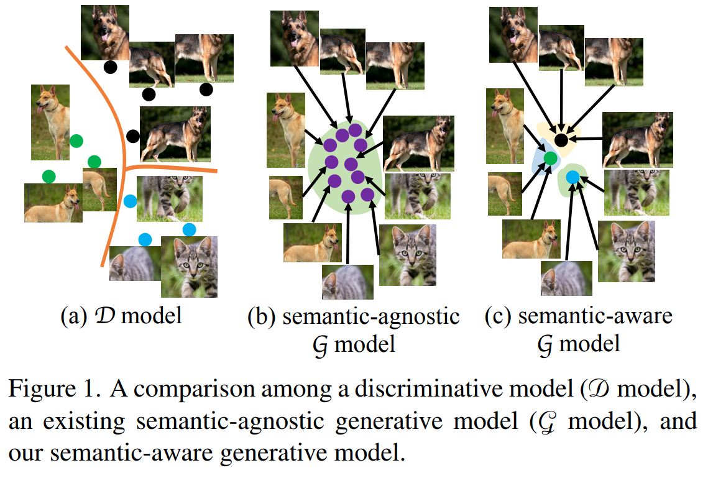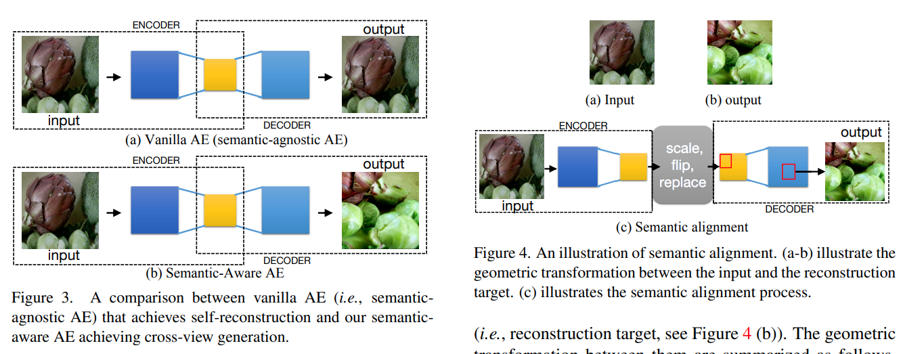 -
On embeddings for numerical features in tabular deep learning
BibTex
url= https://proceedings.neurips.cc/paper_files/paper/2022/file/9e9f0ffc3d836836ca96cbf8fe14b105-Paper-Conference.pdf
@article{gorishniy2022embeddings,
title={On embeddings for numerical features in tabular deep learning},
author={Gorishniy, Yury and Rubachev, Ivan and Babenko, Artem},
journal={Advances in Neural Information Processing Systems},
year={2022}}
Summary
This paper tackles the problem of embedding numerical features in tabular data. The paper proposed a framework called Embeddings for Numerical Features in Tabular Deep Learning. This paper proposes two approaches for embedding numerical features in tabular data. The first approach is called Piecewise Linear Encoding (PLE) where the numerical features are binned and then each bin is encoded into a vector. Intuitively, the PLE reprsents how much the numerical value "fills" the embedding vector, where if the numerical value is greater than the bins, they are marked 1 in the target vector ("filled"), or the percentage of the bin filled if the value fell within the bin, or 0 otherwise. They discussed 2 approaches to find the bins. The first based on quantiles and the other on target aware bins obtained by a decision tree. The second approach is called Periodic Position Encoding (PPE) where the numerical features are encoded into a vector of sin and cosine of a source vector v with K learned coefficients of 2*pi*x where x is the numerical input. Intuitively, the PPE resembles a positional embedding for the value where K represent the embedding dimension (2K for sin and cosine), the range of the C values represents the number of cycles of 2 pi, the Cs represents offsets from zero of the numerical value, and x represents the multiplier of all C's to get the final value. Those Cs were learned and saved as constants to be used in inference.
Problem learning tabular data with numerical features
Solution, Ideas and Why Embed numerical feature values into vectors using piecewise linear encoding based on bins either quantile or target aware with a decision tree. Use periodic position encoding with concatenated vector of sin and cosine of a source vector v with K learned coefficients of 2*pi*x where x is the numerical input
-
VICReg: Variance-Invariance-Covariance Regularization for Self-Supervised Learning
BibTex
url=https://openreview.net/pdf?id=xm6YD62D1Ub
@inproceedings{bardes2021vicreg,
title={VICReg: Variance-Invariance-Covariance Regularization for Self-Supervised Learning},
author={Bardes, Adrien and Ponce, Jean and LeCun, Yann},
booktitle={International Conference on Learning Representations},
year={2021}}
Summary
This paper tackles the problem of avoid collapse to a constant function in representation learning. The authors noticed that previous approaches to repreentation learning relied on negative samples, momentum encoders, or stop gradient to avoid collapse. They proposed a framework called VICReg or Variance-Invariance-Covariance Regularization for Self-Supervised Learning. The framework works by generating 2 augmented batches of views of the same input batch. The 2 batches are passed into an encoder and a projector to obtain 2 batches of projections. The first term in their loss is the invariance term which is the mean square distance between the 2 batches of projections. The invariance term serves to determine that the 2 batches of projections are similar since they are from the same batch of inputs samples. The second term is the variance term which is to prevent collapse to a constant functions. The variance term insures that the variance of the projections are above a threshold meaning that there is enough variety between the projections and thus the representations are not collapsed to a constant vector. The third term is the covariance term which is to prevent information collapse. The covariance term insures that features of the projections are not correlated, meaning that the features are not collapsed to a single feature. In their ablative studies, they found that their methods performs the best when all 3 term are used together with also batch normalization.
Problem avoid collapse without using negative pairs, momentum encoders, or stop gradient
Solution, Ideas and Why from a batch of images, a pair of augmented batches passed into encoder and projector to obtain batch of augmented projections. and an invariance term to measure the mean square distance between augmented views. The distance is to be minimized. Variance and Covariance Regularizer terms to respectively prevent collapse to a constant and information collapse (highly correlated features). Variance term insure variance of the projections are above threshold chosen, and Covariance insure uncorrelated features.
Images
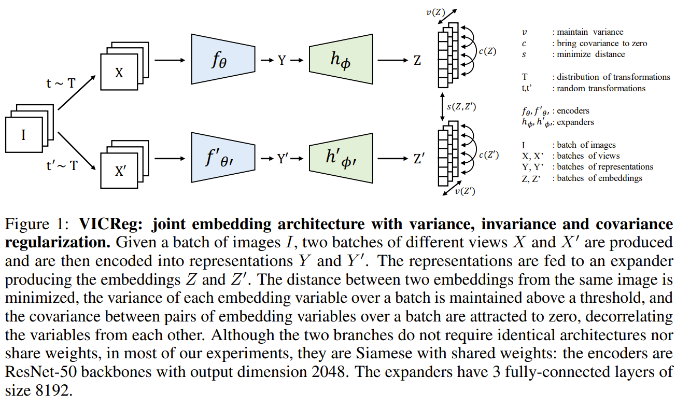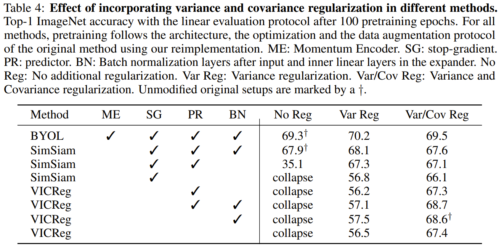 -
Masked autoencoders are scalable vision learners
BibTex
url= https://openaccess.thecvf.com/content/CVPR2022/papers/He_Masked_Autoencoders_Are_Scalable_Vision_Learners_CVPR_2022_paper.pdf
@inproceedings{he2022mae,
title={Masked autoencoders are scalable vision learners},
author={He, Kaiming and Chen, Xinlei and Xie, Saining and Li, Yanghao and Doll{\'a}r, Piotr and Girshick, Ross},
booktitle={Proceedings of the IEEE/CVF conference on computer vision and pattern recognition},
year={2022}}
Summary
This paper tackles the problem of representation learning with masked image modeling. The authors noticed that masking an image with random 16x16 patches coveraging more than 75% of the image provides a difficult task for the encoder to learn a good semantic representation of the image without simply exploiting the spatial information locality in the image. They proposed a framework called Masked Autoencoders where they mask random 75% patches of the image using 16x16 patches and pass only the visible patches to the encoder (Vision Transformer) to obtain a representation. They then add mask tokens to the representation, which are indictive of the absence of visible patches in those areas. The representation with the mask tokens are passed to the decoder to predict the missing patches. The authors proposed an asymmetric auto encoder where the decoder is much smaller than the encoder to reduce compute cost. The decoder is then trained to predict only the missing patches. Through their experiments, they found that a high mask ratio offered a difficult task for the encoder to learn a good representation. They also found that passing only the visible patches reduced the computational cost of training a large encoder.
Problem generative representation learning with masked image modeling
Solution, Ideas and Why mask random 75% patches of image, pass only visible patches to encoder to get representation, add mask tokens to repr before passing to encoder to get pred missing patches asymmetric Auto Encoder where the decoder is much smaller than the encoder to reduce compute cost
Images
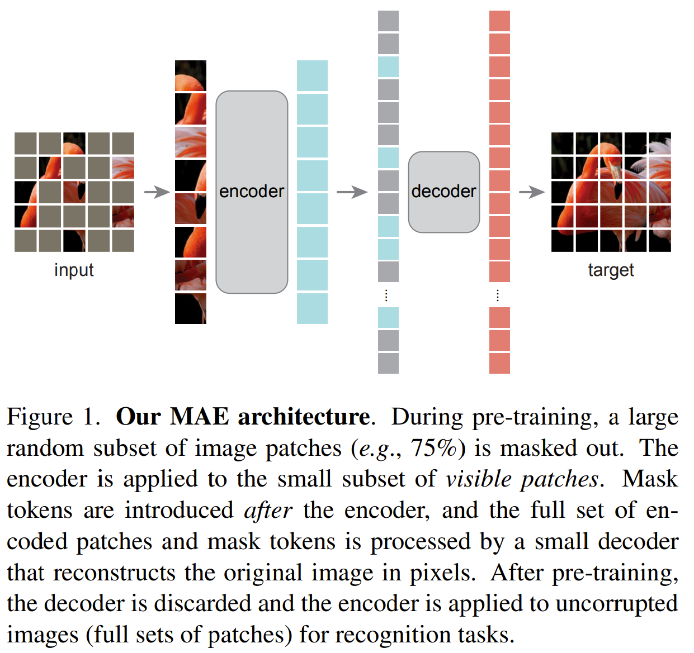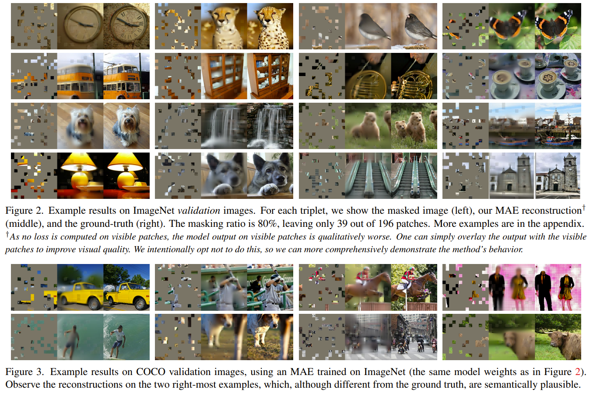 -
SimMIM: A simple framework for masked image modeling
BibTex
url= https://openaccess.thecvf.com/content/CVPR2022/papers/Xie_SimMIM_A_Simple_Framework_for_Masked_Image_Modeling_CVPR_2022_paper.pdf
@inproceedings{xie2022simmim,
title={Simmim: A simple framework for masked image modeling},
author={Xie, Zhenda and Zhang, Zheng and Cao, Yue and Lin, Yutong and Bao, Jianmin and Yao, Zhuliang and Dai, Qi and Hu, Han},
booktitle={Proceedings of the IEEE/CVF Conference on Computer Vision and Pattern Recognition},
year={2022}}
Summary
This paper tackles the problem of representation learning with masked image modeling. Similarly to MAE, the authors were using a Masked Autoencoder and masked significant portion of the image with random 32x32 mask patches. Unlike MAE, they passed both visible and mask patches to the encoder to obtain representations. Those representation vectors were passed to the decoder (without need to pass mask tokens) to predict the missing patches. They went smaller with the decoder and used a single linear layer to predict the missing patches. Their training objective was to predict raw pixel values for the missing patches.
Problem generative representation learning with masked image modeling
Solution, Ideas and Why mask random 60% 32x32 patches of image and pass both mased and visible patches to encoder to get representation and pass representation to 1 layer Linear decoder head to predict missing patches only at raw pixel level. learned mask token vectors are used to replace masked patches. The decoder is a small linear layer (asymmetric AE) and predicting raw pixel value works best
Images
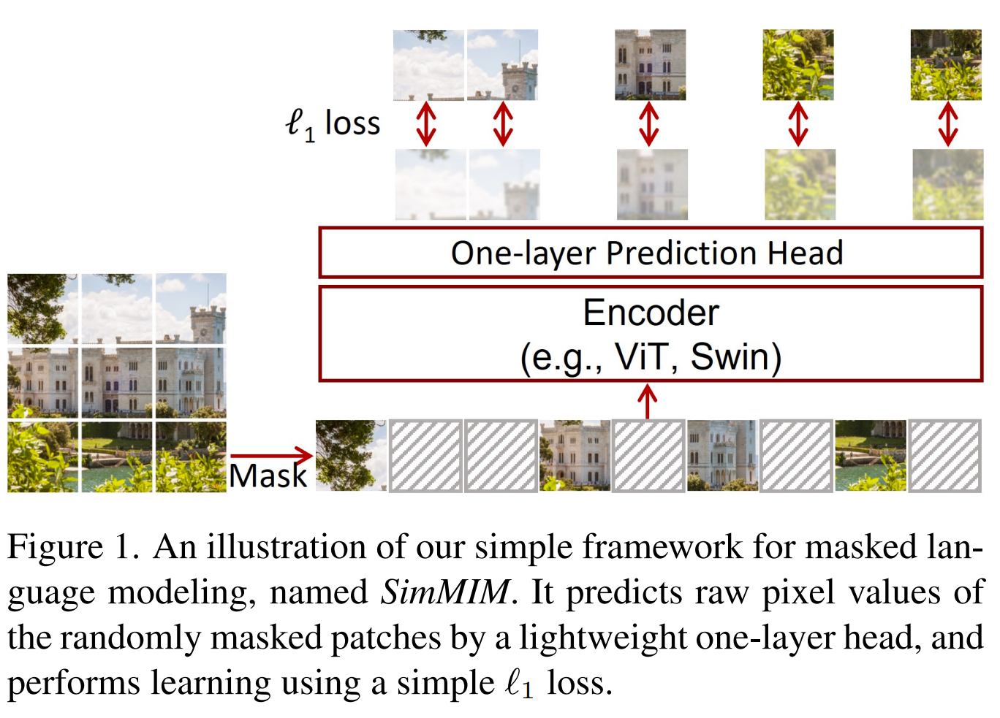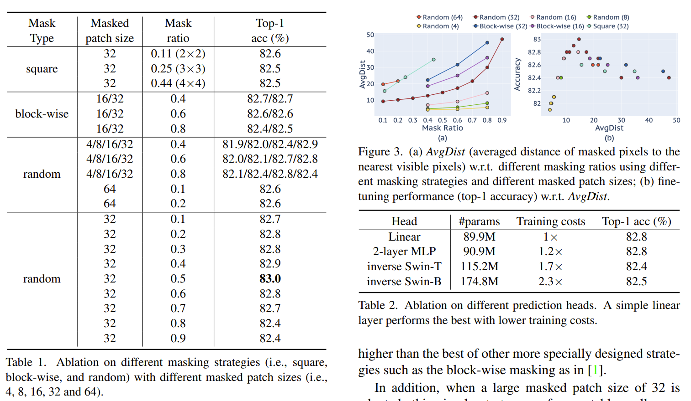 -
SAINT: Improved neural networks for tabular data via row attention and contrastive pre-training
BibTex
url= https://openreview.net/pdf?id=FiyUTAy4sB8
@inproceedings{somepalli2022saint,
title={SAINT: Improved Neural Networks for Tabular Data via Row Attention and Contrastive Pre-Training},
author={Somepalli, Gowthami and Schwarzschild, Avi and Goldblum, Micah and Bruss, C Bayan and Goldstein, Tom},
booktitle={NeurIPS 2022 First Table Representation Workshop},
year={2022}}
Summary
This paper tackles the problem of learning on tabular data. They noticed how deep learning methods still behind traditional methods on tabular data. They proposed a framework called SAINT or Self-Attention intersample attention transformer for tabular data. First they embed both categorical and numerical values in an embedding vector before passing it to their SAINT transformer. Their transformer uses 2 kinds of attention, self attention between features and their proposed intersample attention between rows. The intersample attention is calculated by computing the attention score between the query row and all other rows. that attention score dictates how much of the features of other samples will be used to produce the representation of the query row. They also proposed a 2 stage training where they first pretrain in a self supervised manner with contrastive loss between the projection of the row and its noisy augmented view, and with reconstructing the row from its noisy view projection. The second stage is a supervised finetuning stage for the downstream task. They used CutMix and MixUp for data corruption.
Problem learning tabular data
Solution, Ideas and Why intersample attention or attention across rows on top of self attention between columns (features). 2 stages, self supervised pretraining with contrative loss between projections of a sample and its noisy augmented view, and with reconstructing the sample from its noisy view reprresentation. Supervised finetuning stage follows.
Images
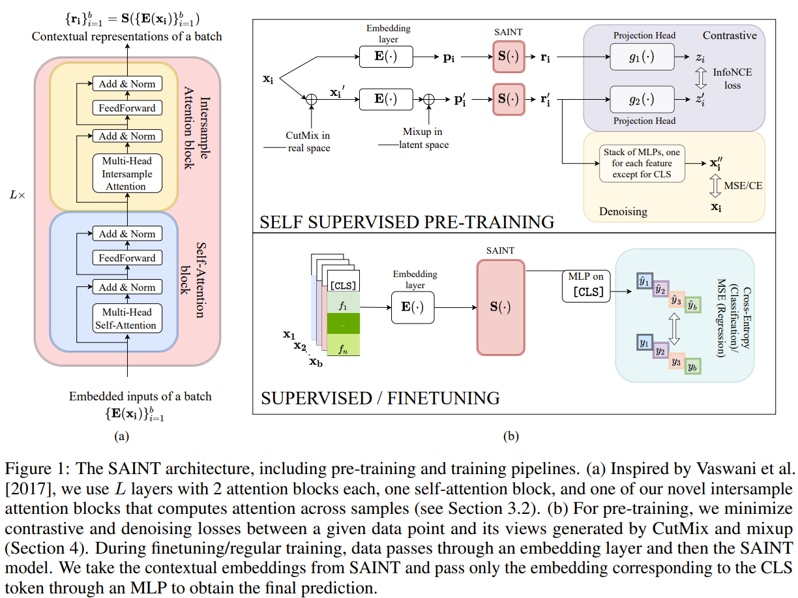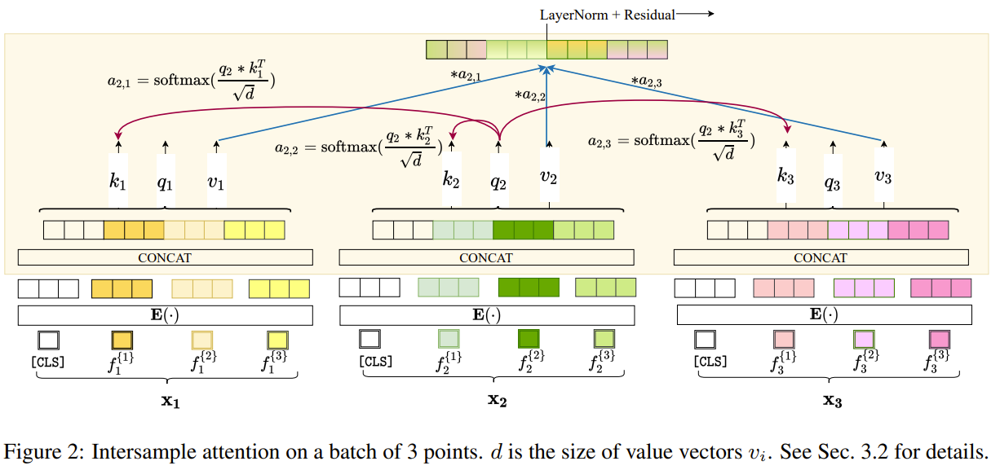 -
Self-supervised Learning is More Robust to Dataset Imbalance
BibTex
url=https://openreview.net/pdf?id=4AZz9osqrar
@inproceedings{liu2021rwsam,
title={Self-supervised Learning is More Robust to Dataset Imbalance},
author={Liu, Hong and HaoChen, Jeff Z and Gaidon, Adrien and Ma, Tengyu},
booktitle={International Conference on Learning Representations},
year={2021}}
Summary
Investigated the robustness of SSL to imbalance in data and has better results on OoD cases. Without labels, net is less sensitive to outlier compared to with labels. SSL does this by learning the intrinsic structure of the input data. SL can overfit to noise if it is consistent enough. It's hard to rebalance without labels so instead we can use the loss sharpness where a sharper loss indicate harder and therefore tailer sample. Using KDE on the repr, they measure the loss in the neighborhood of the sample and if that loss is uniformly low, it's weight less and if it's uniformly high, it is weighted more.
Problem imbalance data in self supervised learning
Images
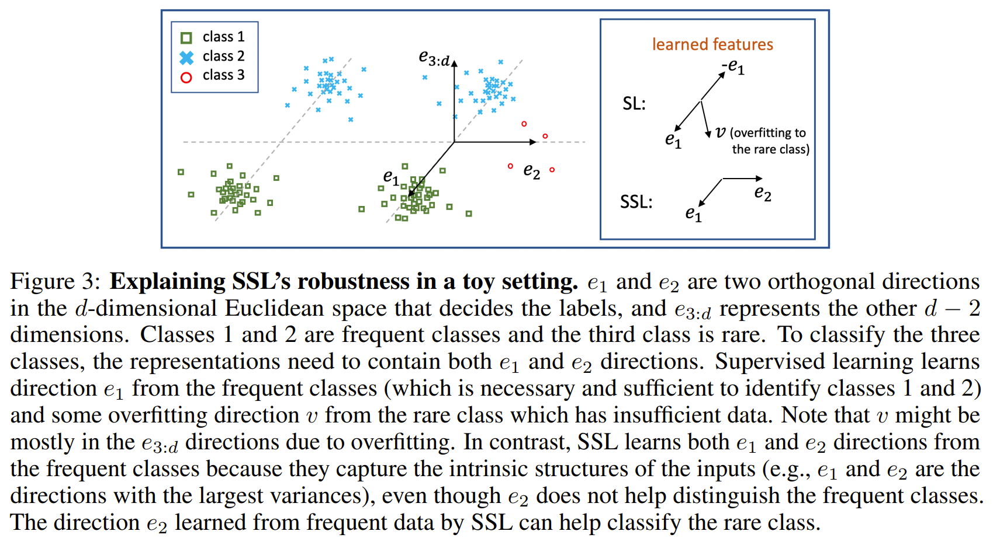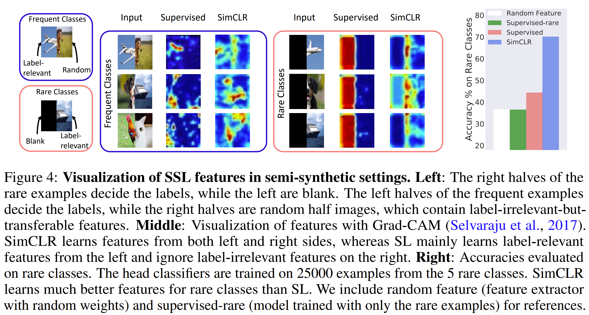 -
data2vec: A General Framework for Self-supervised Learning in Speech, Vision and Language,
BibTex
url=https://proceedings.mlr.press/v162/baevski22a/baevski22a.pdf
@inproceedings{baevski2022data2vec,
title={Data2vec: A general framework for self-supervised learning in speech, vision and language},
author={Baevski, Alexei and Hsu, Wei-Ning and Xu, Qiantong and Babu, Arun and Gu, Jiatao and Auli, Michael},
booktitle={International Conference on Machine Learning},
year={2022}},
Summary
2 networks, ema teacher which takes original input (image or text or sound) to produce embeddings and a student which takes masked input to produce embeddings and predictions of the teacher avg of K layers outputs. Their objective is smooth L1 loss which transition from square loss to l1 loss when the error of a particular sample is greater than a threshold beta. The equations are setup with additional terms of beta to transition the function smoothly. This help mitigate outliers.
Problem predict embedding
Images
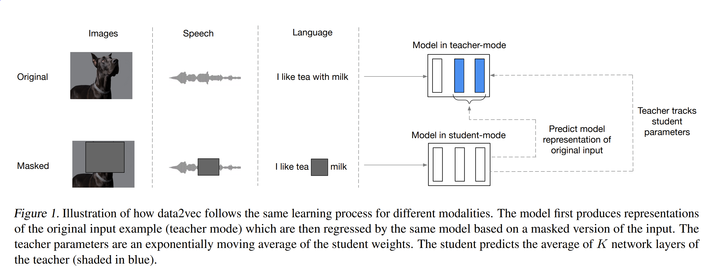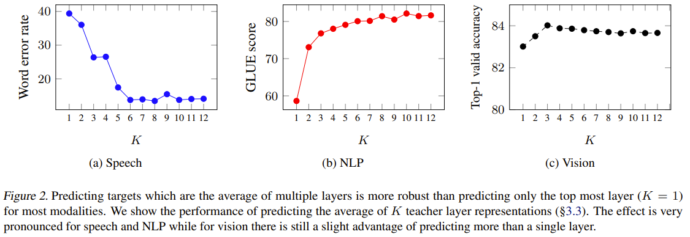 -
Masked Siamese Networks for Label-Efficient Learning
BibTex
url=https://www.ecva.net/papers/eccv_2022/papers_ECCV/papers/136910442.pdf
@inproceedings{assran2022msn,
title={Masked siamese networks for label-efficient learning},
author={Assran, Mahmoud and Caron, Mathilde and Misra, Ishan and Bojanowski, Piotr and Bordes, Florian and Vincent, Pascal and Joulin, Armand and Rabbat, Mike and Ballas, Nicolas},
booktitle={European Conference on Computer Vision},
year={2022}}
Summary
2 branches, anchor (online) branch and a ema (target) branch. Anchor branch get patchified and masked anchor image while target branch used augmentation and patchify target image. With learned cluster center (Dense), the objetive was to match cluster assignment from online to target branch To ensure the clusters formed are roughly the same size (same number of elements), they explicitly maximize the mean entropy of the assignment prediction. The max entropy is when their probabilities are the same and they are uniformly distributed
Problem predict embedding
Images
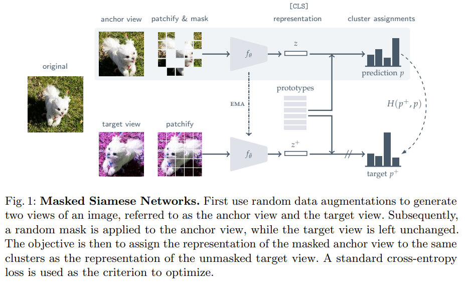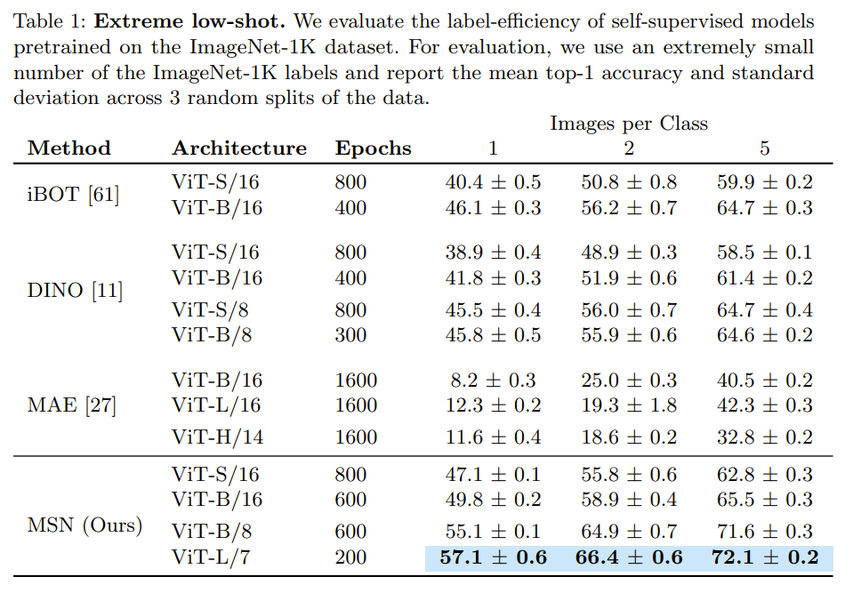 -
The hidden uniform cluster prior in self-supervised learning
BibTex
url=https://openreview.net/pdf?id=04K3PMtMckp
@inproceedings{assran2022hidden,
title={The hidden uniform cluster prior in self-supervised learning},
author={Assran, Mido and Balestriero, Randall and Duval, Quentin and Bordes, Florian and Misra, Ishan and Bojanowski, Piotr and Vincent, Pascal and Rabbat, Michael and Ballas, Nicolas},
booktitle={The Eleventh International Conference on Learning Representations},
year={2022}}
Summary
Contrastive Methods can be showed to reduce to implicit or explicit k-means clustering. those can be further divided into instance based or volume maximizing. Volume maximi- zing does worse on imbalance because they assume clusters are of equal size The hidden cluster prior is addressed by explicit incentivizing the clusters formed to be less uniform and more like a pareto distribution. Assume the distribution of the data is known and can be provided to the algorithm
Problem imbalanced data
Images
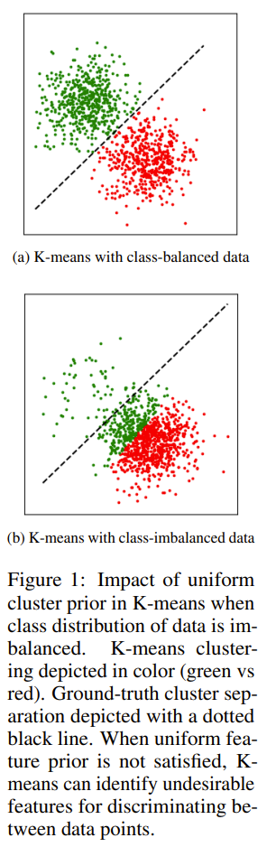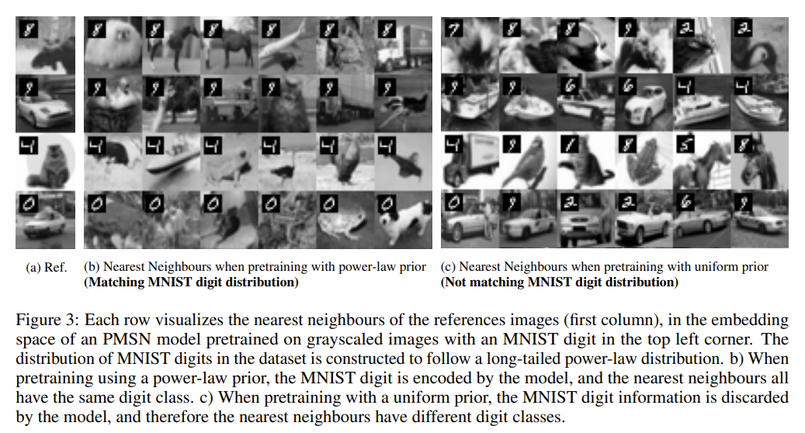 -
Divide and contrast: Self-supervised learning from uncurated data
BibTex
url=https://openaccess.thecvf.com/content/ICCV2021/papers/Tian_Divide_and_Contrast_Self-Supervised_Learning_From_Uncurated_Data_ICCV_2021_paper.pdf
@inproceedings{tian2021dnc,
title={Divide and contrast: Self-supervised learning from uncurated data},
author={Tian, Yonglong and Henaff, Olivier J and van den Oord, A{\"a}ron},
booktitle={Proceedings of the IEEE/CVF International Conference on Computer Vision},
year={2021}}
Summary
train base model on uncurated data to using CL to get repr that will be clustered using k-means. Original dataset is split according to the cluster and expert models are trained on individual subsets using CL. For any sample, the base model and the appropriate expert is used to distill knowledge into student. The student model learns to predict the project of the teachers models with its additional regression head. The subsets allow for hard negative mining which incentivizes learning better expert representations. Base model helps tie repr space together.
Problem imbalanced uncurated data
Images
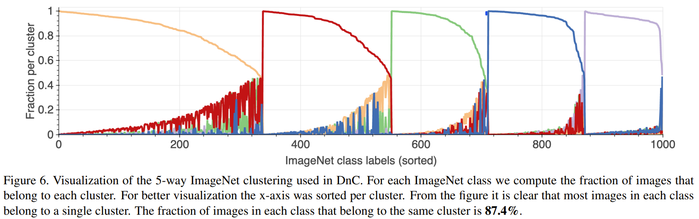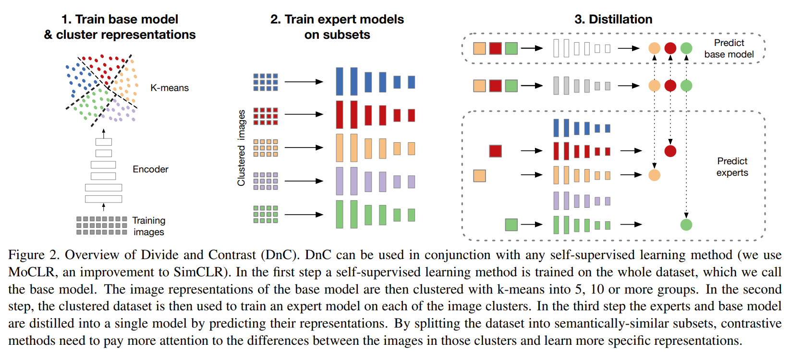 -
Improving contrastive learning on imbalanced data via open-world sampling
BibTex
url=https://proceedings.neurips.cc/paper_files/paper/2021/file/2f37d10131f2a483a8dd005b3d14b0d9-Paper.pdf
@article{jiang2021mak,
title={Improving contrastive learning on imbalanced data via open-world sampling},
author={Jiang, Ziyu and Chen, Tianlong and Chen, Ting and Wang, Zhangyang},
journal={Advances in Neural Information Processing Systems},
year={2021}}
Summary
compensate for imbalance in data by sampling external data according to tailness, proximity, diversity. Tailness where the hard samples according to ECLE are considered tail, diversity to prevent similar samples, and proximity to prevent OoD outlier samples ECLE is based on expected contrastive loss over many augmentations for the views to smooth out the randomness of augmentations so the ECLE is only attributed to tailness. When applying K-center greedy, they use min because min garantees that the sample will be further away than any other.
Problem imbalanced data
Images
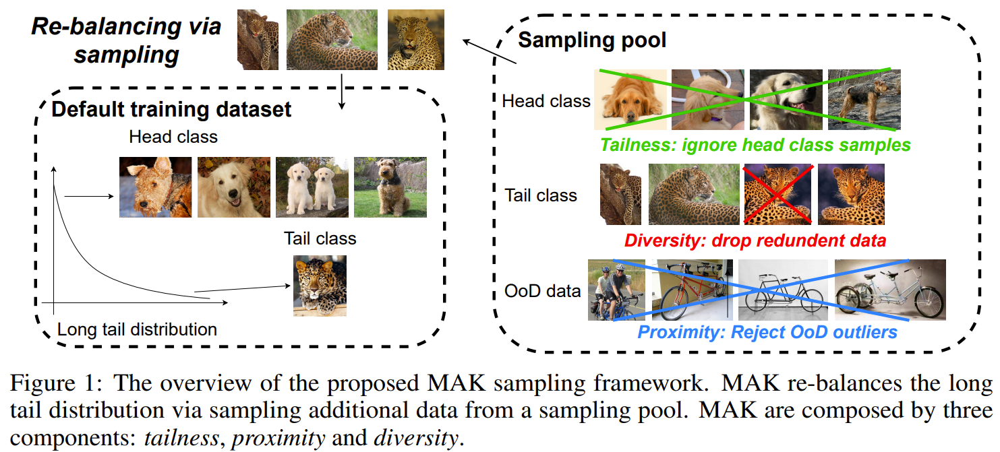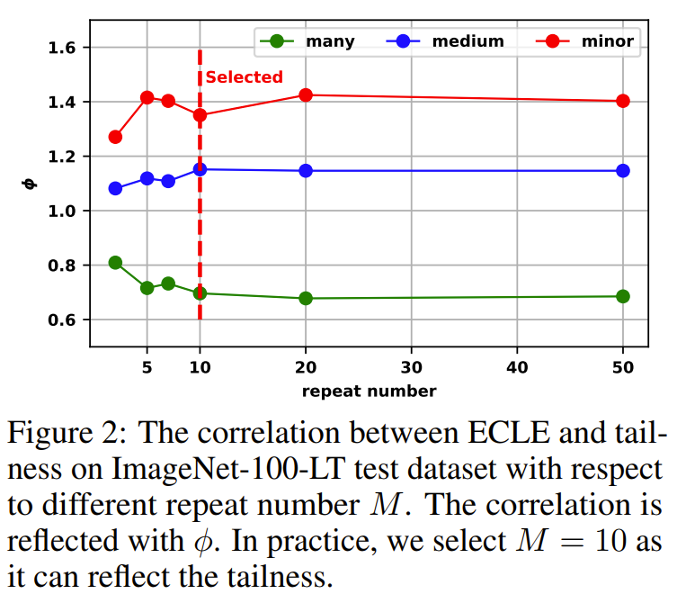 -
Representation learning with contrastive predictive coding
BibTex
url=https://arxiv.org/pdf/1807.03748.pdf
@article{oord2019cpc,
title={Representation learning with contrastive predictive coding},
author={Oord, Aaron van den and Li, Yazhe and Vinyals, Oriol},
journal={arXiv preprint arXiv:1807.03748},
year={2019}}
Summary
from time series, use encoder to produce timestep representation z and use an autoregressive encoder to produce representation context c across timesteps. Context of repr in the past is used to predict the repr z of future timesteps using CL where a positve pair is with Wc and z in the future. from time series, use encoder to produce timestep representation z and use an autoregressive encoder to produce representation context c across timesteps. Context of repr in the past is used to predict the repr z of future timesteps using CL where a positve pair is with Wc and z in the future
Problem time series data
Images
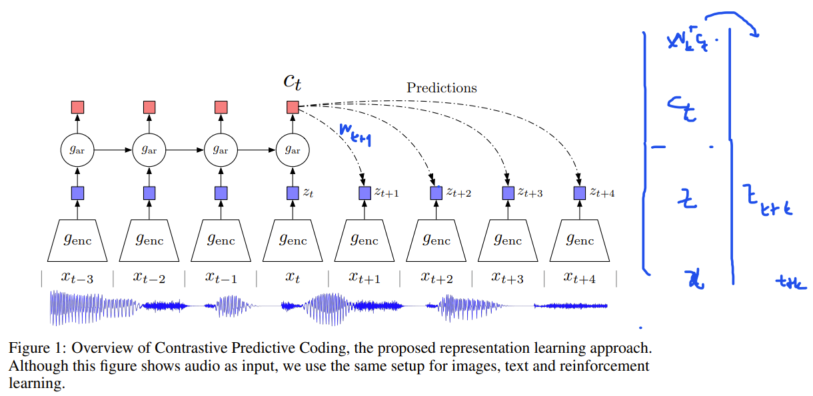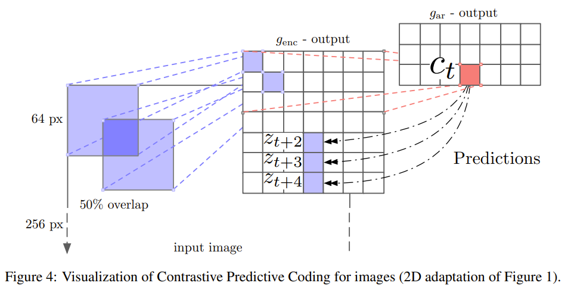 -
Unsupervised scalable representation learning for multivariate time series
BibTex
url=https://proceedings.neurips.cc/paper/2019/file/53c6de78244e9f528eb3e1cda69699bb-Paper.pdf
@article{franceschi2019tloss,
title={Unsupervised scalable representation learning for multivariate time series},
author={Franceschi, Jean-Yves and Dieuleveut, Aymeric and Jaggi, Martin},
journal={Advances in neural information processing systems},
year={2019}}
Summary
using triplet loss where a reference subseries is taken from a batch of series, a positive subseries taken from the reference subseries to form a positive pair with the reference. K negative subseries are taken from any other series in the batch to form a negative pair. dilated convolution where the stride and the filter size is the same for every layer but the dilation increase by factor of 2 at every layer, increasing the distance between 2 consecutive weights. To handle multivariate series, the increase the dimensionality of the filters from 1 to 2 where the added dim is for the additional vars
Problem time series data
Images
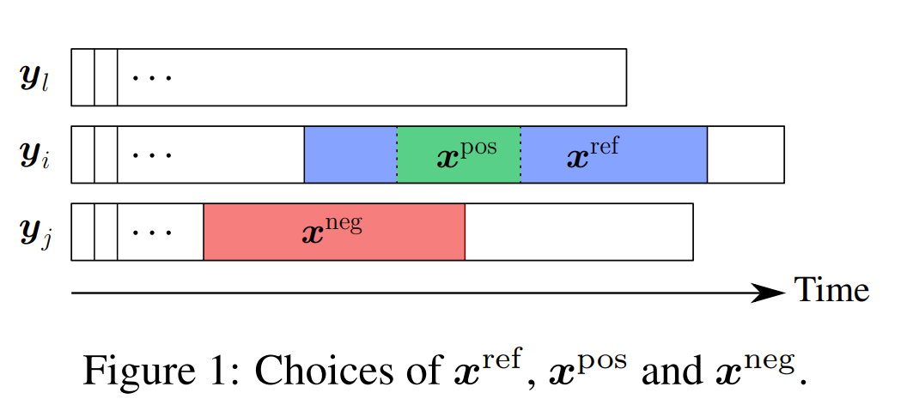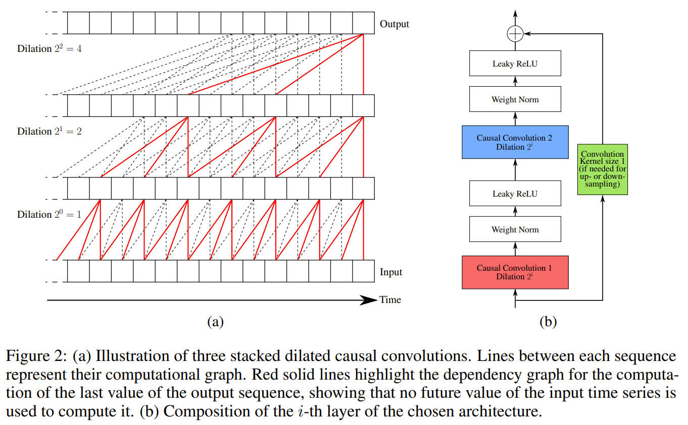 -
Unsupervised Representation Learning for Time Series with Temporal Neighborhood Coding
BibTex
url=https://openreview.net/pdf?id=8qDwejCuCN
@inproceedings{tonekaboni2020tnc,
title={Unsupervised Representation Learning for Time Series with Temporal Neighborhood Coding},
author={Tonekaboni, Sana and Eytan, Danny and Goldenberg, Anna},
booktitle={International Conference on Learning Representations},
year={2020}}
Summary
define a time window Wt centered at a reference timestep t of width delta. From Wt, define a a temporal neighborhood as a gaussion distribution over the time windows with mean Wt and variance defined by eta*delta. Given the anchor window Wt and the temp neighborhood of Wt, a positive sample is one from the neighborhood and a "negative" sample is one outside the hood Sampling bias in MTS where even outsdie of the hood, a sample window can still have similarities with the anchor window. To tackle this, consider outside neighborhood as unlabeled with some prob w to be positive (similar) and 1-w to be (dissimilar). They use a Disciminator Net with BCE with output 1 as 2 repr of windows in hood and 0 outside the hood.
Problem representation learning on time series
Images
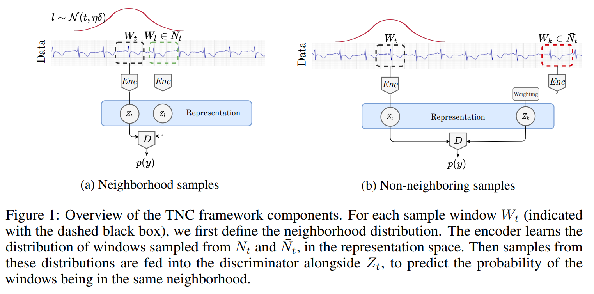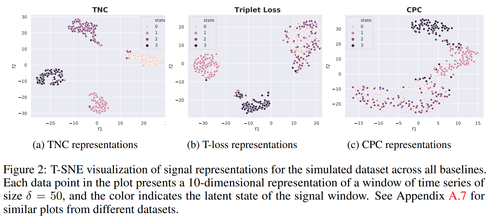 -
A Transformer-based Framework for Multivariate Time Series Representation Learning
BibTex
url=https://dl.acm.org/doi/pdf/10.1145/3447548.3467401
@inproceedings{zerveas2021tst,
title={A transformer-based framework for multivariate time series representation learning},
author={Zerveas, George and Jayaraman, Srideepika and Patel, Dhaval and Bhamidipaty, Anuradha and Eickhoff, Carsten},
booktitle={Proceedings of the 27th ACM SIGKDD conference on knowledge discovery \& data mining},
year={2021}}
Summary
From MTS, input variable vector at time t is encoded with a Linear layer into d dimensional vector. to further reduce the resolution in time of the MTS, a 1D conv can be applied to summary multiple timesteps into 1. Once d dim vector is obtained, learned positional embedding are added to produce the final input for encoder only transformer. The encoder is then used to produce representation per timesteps. They trained first with unsupervised where a fraction of the input window was masked and the network predicts the mask input to reconstructed the window. They then trained for the downstream task where for a window, they obtain representations for each timesteps and concatenate them into the full window representation.
Problem using transformer for time series data
Images
-
Time-series representation learning via temporal and contextual contrasting
BibTex
url=https://www.ijcai.org/proceedings/2021/0324.pdf
@article{eldele2021tstcc,
title={Time-series representation learning via temporal and contextual contrasting},
author={Eldele, Emadeldeen and Ragab, Mohamed and Chen, Zhenghua and Wu, Min and Kwoh, Chee Keong and Li, Xiaoli and Guan, Cuntai},
journal={Proceedings of the Thirtieth International Joint Conference on Artificial Intelligence (IJCAI-21)},
year={2021}}
Summary
From a time series, they produce 2 augs, a weak aug (jitter and scale) and a strong aug (segment suffling and jitter). From the 2 augs from the same sample, they are encoded into repr per timesteps. they do temporal contrating where the repr are used to produce context summarizing past timesteps. From context of an aug, they predict the future repr of the other aug as positive pair. neg pair are other sample repr in minibatch. They also do contextual repr where from the context of both augs, they measure the cosine similarity and that similarity should be maximized for contexts of augs from the same sample and minimized for contexts of augs from different samples. During experimentation, they found contextual contrastive is of higher importance than temporal contrasting
Problem time series representation
Images
-
Ts2vec: Towards universal representation of time series
BibTex
url=https://ojs.aaai.org/index.php/AAAI/article/view/20881/20640
@inproceedings{yue2022ts2vec,
title={Ts2vec: Towards universal representation of time series},
author={Yue, Zhihan and Wang, Yujing and Duan, Juanyong and Yang, Tianmeng and Huang, Congrui and Tong, Yunhai and Xu, Bixiong},
booktitle={Proceedings of the AAAI Conference on Artificial Intelligence},
year={2022}}
Summary
from a time series, they produce 2 augs which are random croppings with an overlapping region to incentivize contextual consistancy between the augs. Cropping doesn't affect the amplitude of the series. From the 2 crops, the obtain per timestep projections. In the overlapping region, they mask random timesteps according to bernoulli distribution in such a way that they are visible in the second aug if masked in the first and vice versa. From masked views they obtain repr using Dialated conv. they employ hierarchical contrasting composed of temporal and instance-wise contrasting summed at multiple semantic levels using maxpooling (dividing the repr series in half) to incentivize temporal invariance of the representations. The temporal contrasting is considering a view of a sample at a time t and the other view of the sample at the same time t as positive pair, while all other timesteps of both views for the same sample are negative. The instance-wise contrasting considers the repr of the views from the same sample at the same timestep as positive pair while the reprs of the views of other instances at the same timestep are negative.
Problem time series representations
Images
-
Dynamic sparse network for time series classification: Learning what to “see”
BibTex
url=https://proceedings.neurips.cc/paper_files/paper/2022/file/6b055b95d689b1f704d8f92191cdb788-Paper-Conference.pdf
@article{xiao2022dns,
title={Dynamic sparse network for time series classification: Learning what to “see”},
author={Xiao, Qiao and Wu, Boqian and Zhang, Yu and Liu, Shiwei and Pechenizkiy, Mykola and Mocanu, Elena and Mocanu, Decebal Constantin},
journal={Advances in Neural Information Processing Systems},
year={2022}}
Summary
Use large sparse kernel that are dynamically "indicated" with a dynamic indicator function. the eNRF or effective neighborhood Receptive Field is the distance between the first and the last activate weight in the kernel layer. The indicator funtion is updated every set of epochs to insure the sparsity of the kernels. The kernels in each dynamic sparse layer are divided into groups corresponding to exploration regions for the kernel weights. Activated weights for a particular group are limited to the exploration region. This allows for various eNRF to be covered without biasing toward large receptive fields, and the exploration space to be reduced
Problem efficient representation of time series data
Images
-
Self-supervised contrastive pre-training for time series via time-frequency consistency
BibTex
url=https://proceedings.neurips.cc/paper_files/paper/2022/file/194b8dac525581c346e30a2cebe9a369-Paper-Conference.pdf
@article{zhang2022tfc,
title={Self-supervised contrastive pre-training for time series via time-frequency consistency},
author={Zhang, Xiang and Zhao, Ziyuan and Tsiligkaridis, Theodoros and Zitnik, Marinka},
journal={Advances in Neural Information Processing Systems},
year={2022}}
Summary
time-frequency consistency where from sample, the time based and frequency representation should be close. In addition to time based and freq based represenations, they produce repr of augmented views of both time based and freq based. In time-freq, reprs of the same sample in time and freq should be closer to each other than to repr of aug view in time and freq fo the same sample which should closer than to repr of other samples. in time, anchor view with aug view of the same sample is positive pair while anchor view with other samples and their views as negative pairs. Similarly in frequency. Their architecture has 4 networks. 2 encoder networks. Time enoder, a space encoder. 2 projectors, a time to time-space project and a freq to freq-time projector.
Problem representation learning of time series data
Images
-
CLOCS: Contrastive Learning of Cardiac Signals Across Space, Time, and Patients.
BibTex
url=http://proceedings.mlr.press/v139/kiyasseh21a/kiyasseh21a.pdf
@inproceedings{kiyasseh2021clocs,
title={Clocs: Contrastive learning of cardiac signals across space, time, and patients},
author={Kiyasseh, Dani and Zhu, Tingting and Clifton, David A},
booktitle={International Conference on Machine Learning},
year={2021}}
Summary
From samples they generate 2 sets augmented views. In addition they generate segments from the same samples (temporal consistency) and use different lead (spatial consistency) as augmented views. They measure the cosine similary and, when from different segments, different leads, diff segment and lead, or diff augmentatios, two view from the same patient (whether same or different instance sample) are positive and 2 view from different patients are negative. the transformation applied to the two view are flipped to make sure that the initial asymmetric contrastive learning equations 2 and 3 are symmetrized in equation 4.
Problem sample efficient time series representation learning
Images
-
TabNet: Attentive Interpretable Tabular Learning
BibTex
url=https://ojs.aaai.org/index.php/AAAI/article/download/16826/16633
@inproceedings{arik2021tabnet,
title={Tabnet: Attentive interpretable tabular learning},
author={Arik, Sercan {\"O} and Pfister, Tomas},
booktitle={Proceedings of the AAAI conference on artificial intelligence},
year={2021}
}
Summary
The authors propose TabNet, a novel deep learning architecture for tabular data that uses sequential attention to select salient features at each decision step, enabling interpretability and efficient learning. The key components of TabNet are: 1. Feature selection: TabNet employs a learnable mask to perform soft selection of salient features at each decision step. The mask is obtained using an attentive transformer that takes the processed features from the previous step as input. The masks are sparse, which allows the model to focus on the most relevant features and improves parameter efficiency. 2. Feature processing: The selected features are processed using a feature transformer, which consists of decision step-dependent and shared layers. The processed features are then split into the decision step output and information for the subsequent step. 3. Interpretability: TabNet's feature selection masks provide insight into the model's reasoning process. The masks can be analyzed at each decision step to understand the importance of individual features, and the masks can be aggregated to obtain global feature importance. 4. Tabular self-supervised learning: TabNet introduces a decoder architecture for reconstructing tabular features from the encoded representations. The model is trained to predict missing feature columns from the others, enabling unsupervised pre-training to improve performance when labeled data is scarce. The overall TabNet architecture consists of an encoder with multiple decision steps, each performing feature selection and processing, followed by an aggregation of the decision step outputs to obtain the final prediction. The model is trained end-to-end using standard classification or regression loss functions, along with a sparsity regularization term to encourage sparsity in the feature selection masks.
Problem Despite the remarkable success of deep neural networks (DNNs) in various domains, their performance on tabular data has been limited compared to tree-based ensemble methods. Tabular data often has complex relationships between features and target variables, with decision boundaries well-approximated by axis-aligned splits. Standard DNN architectures struggle to learn optimal decision boundaries for tabular data and lack interpretability, hindering their adoption in real-world applications.
Images
-
Local contrastive feature learning for tabular data
BibTex
url= https://dl.acm.org/doi/pdf/10.1145/3511808.3557630?casa_token=1Z0XoSMMHn0AAAAA:5Vt7BZgpIoonKWOI5ML4Bjg8quihpVoVKJlCwNLSaxJkPUupQNLrQE-2fLb5V4t0Xxtivj5bOa7stA
@inproceedings{gharibshah2022local,
title={Local contrastive feature learning for tabular data},
author={Gharibshah, Zhabiz and Zhu, Xingquan},
booktitle={Proceedings of the 31st ACM International Conference on Information \& Knowledge Management},
year={2022}}
Summary
Gharibshah and Zhu propose a novel self-supervised representation learning framework called Local Contrastive Learning (LoCL) for tabular data. The key idea behind LoCL is to learn local patterns and features from subsets of features, exploiting the inherent correlations and interactions often present in real-world tabular datasets. The LoCL framework consists of several key components. First, to enable local learning, the input features are reordered based on their pairwise Pearson correlation coefficients. This is achieved by constructing a maximum spanning tree, where features are treated as nodes and the absolute values of correlations as edge weights. The tree is then traversed using a depth-first search starting from the feature pair with the highest correlation, yielding a new feature order that places strongly correlated features adjacent to each other. Next, the reordered features are partitioned into subsets, allowing local patterns to be learned from groups of correlated features. The authors suggest using two subsets, although the framework can accommodate more. Each feature subset is then processed by a separate 1D convolutional autoencoder branch. The autoencoders learn latent representations that capture the local structure within each subset. To train the autoencoders, LoCL employs a combination of two loss functions in a self-supervised manner. The first is a contrastive loss, which maximizes the agreement between the latent representations of different feature subsets from the same instance. Specifically, the contrastive loss encourages the latent representations of the two feature subsets to be similar for the same instance and dissimilar for different instances. The second loss term is a reconstruction loss that is applied separately to each feature subset. It ensures that the learned representations can accurately reconstruct the original input features within each subset. The total loss is a weighted sum of the contrastive and reconstruction losses. Finally, to obtain the overall representation for a given instance, the latent representations from each autoencoder branch are concatenated. This final representation, which captures both local patterns within feature subsets and global interactions between subsets, can then be used for various downstream tasks such as classification or anomaly detection.
Problem Existing self-supervised representation learning methods for tabular data typically use dense neural networks to learn global patterns from all features. However, in many real-world datasets, useful patterns often only involve a small subset of features, and features frequently exhibit local correlations and interactions. Dense networks struggle to effectively capture these local patterns. There is a need for a self-supervised learning approach that can leverage the local structure and correlations in tabular features to learn more informative representations.
Images